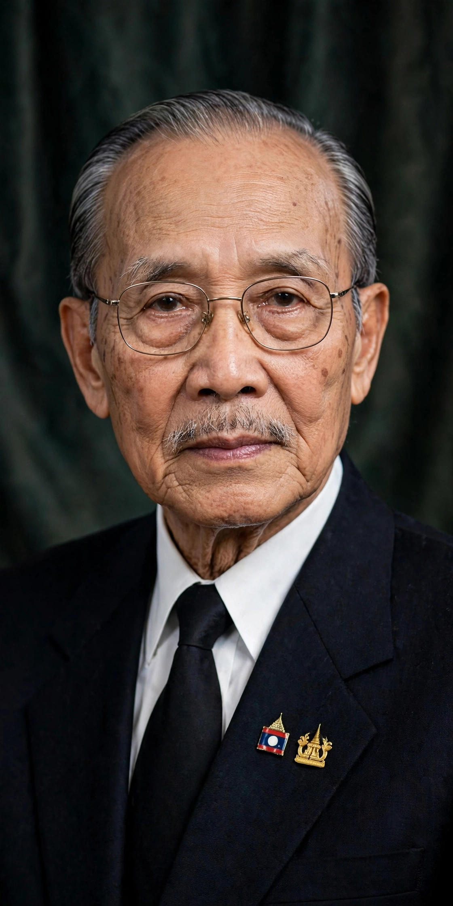

Souphanouvong
| Souphanouvong | |
|---|---|
| Born | 13 July 1909, Luang Prabang |
| Died | 9 January 1995, Vientiane |
| Office | 1st President of Laos (1975–1986) |
| Known as | "The Red Prince" |
Prince Souphanouvong (1909–1995), known as the "Red Prince", was a Laotian politician and a leader of the communist Pathet Lao movement. He served as the first president of the Lao People's Democratic Republic from 1975 to 1986.

1. Early life
2. The Red Prince
3. Civil war
4. Presidency
Early life
Born into the royal family of Luang Prabang, Souphanouvong studied civil engineering in France, graduating from the École des Ponts ParisTech. He worked as an engineer in Vietnam before entering politics after the Second World War.
The Red Prince
Unlike his half-brothers Souvanna Phouma and Boun Oum, who led the neutralist and royalist factions respectively, Souphanouvong allied with the Viet Minh and became the public face of the Pathet Lao, earning the nickname "the Red Prince". His royal lineage lent the communist movement legitimacy among Lao peasants.
Civil war
During the Laotian Civil War, Souphanouvong served as chairman of the Neo Lao Hak Xat (Lao Patriotic Front), the political front of the Pathet Lao, while real military power rested with Kaysone Phomvihane.
Presidency
After the Pathet Lao victory in December 1975, Souphanouvong became the first president of the Lao People's Democratic Republic. He resigned in 1986 on health grounds and died in Vientiane in 1995.
See also: Pathet Lao · Kaysone Phomvihane · Laotian Civil War